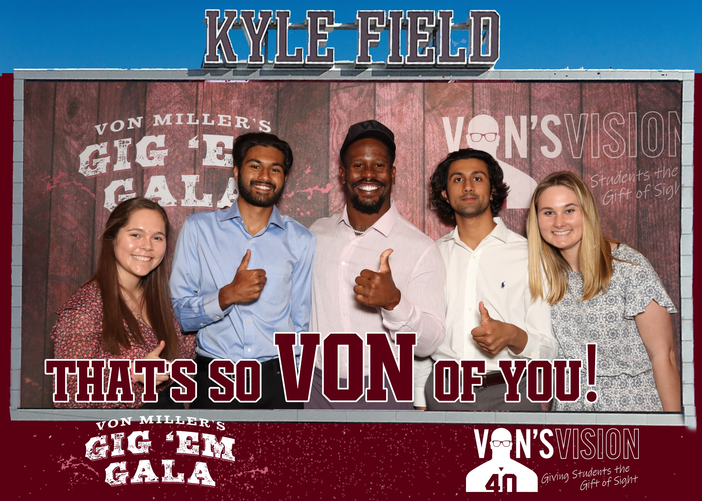
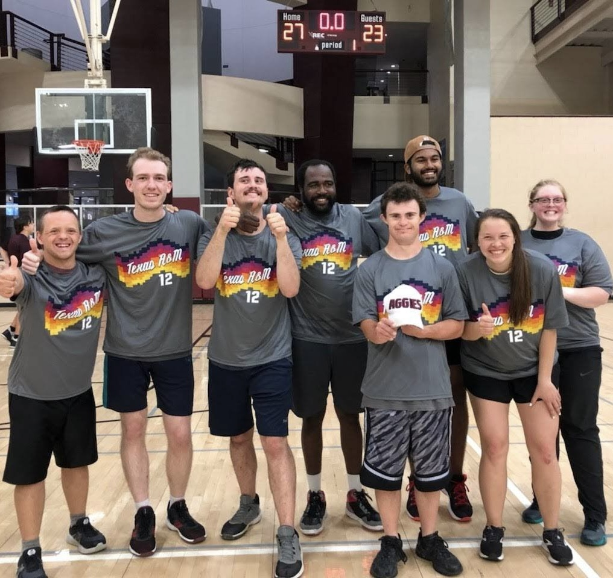
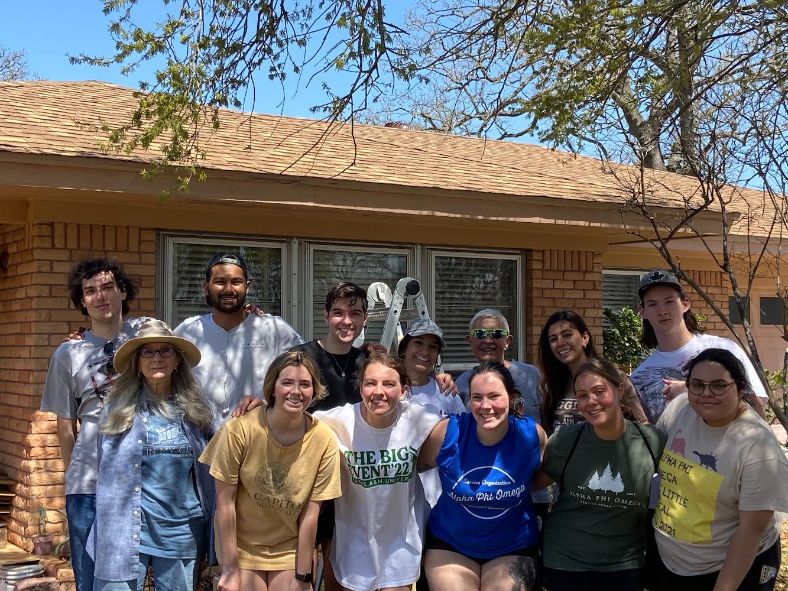

Service
Von Miller's Gig 'Em Gala
I worked alongside NFL Super Bowl MVP, Von Miller, to run an auction fundraiser for his charitable organization, Von's Vision, which gives the gift of sight to low-income students in the form of free eye care and glasses. In attendance, there were numerous NFL stars, including Aggie legends Mike Evans and Johnny Manziel. I had numerous responsibilities in order to keep the event running smoothly including leading the team of volunteers for the event, keeping track of bids worth tens of thousands of dollars, and entertaining patrons and attendees while the stars were getting interviewed and situated. I also helped with the setup and teardown of the event, which included setting up the auction items, setting up the tables and chairs, and cleaning up the venue after the event.
Unified Special Olympics
Special Olympics Unified Programs bring together athletes with and without intellectual disabilities to train and compete on the same team. Throughout the year, Unified Partners participate in a variety of sports to improve physical fitness, sharpen skills, challenge the competition and have fun! I participate in this almost every semester, and it is always a blast. I have played basketball, soccer, and flag football with the athletes, and in the fall of 2022, the team I was assigned to for basketball happened to win the whole league. It was one of the most memorable moments of my life.
The Big Event
Since its introduction in 1982, The Big Event has become the largest one-day, student-run service project in the nation. Each spring, tens of thousands of Texas A&M students come together to say “Thank You” to the residents of Bryan and College Station. For the past 37 years, Aggie students have participated in this annual event to show their appreciation to the surrounding community, completing service projects such as yard work, window washing, and painting for residents of the community. Although The Big Event has become the largest one-day, student-run service project in the nation, our message and our mission remains the same - to simply say “Thank You.”
